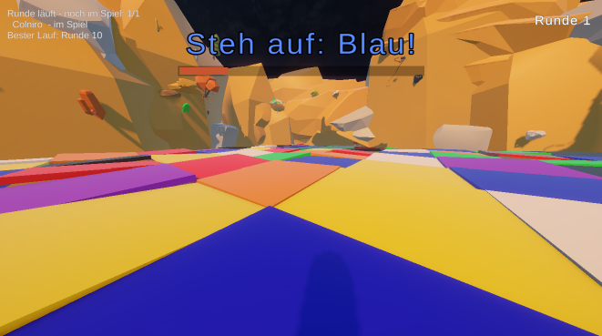

Color Dash
Spielziel
Color Dash ist ein Partyspiel nach dem Prinzip «Der Boden ist Lava», inspiriert von Fall Guys. Das Spiel nennt eine Farbe, und du rennst so schnell wie möglich auf eine Plattform in dieser Farbe. Alle anderen Plattformen verschwinden. Wer runterfällt, ist raus, und wer zuletzt übrig bleibt, gewinnt.
Ablauf einer Runde
Alle Spieler bestätigen in der Lobby, dass sie bereit sind. Danach startet die erste Runde. Mit jeder Runde bleibt weniger Zeit zum Reagieren. Ab Runde 10 können mehrere Farben hintereinander kommen, und pro Runde gilt ein Modifikator: rutschiger Boden, wenig Schwerkraft oder invertierte Kamera. Du kannst allein spielen und versuchen, möglichst viele Runden zu überleben, oder online mit bis zu 8 Spielern.
Zusammenarbeit
Ich habe Color Dash zusammen mit Yannick Leutner gebaut. Das Repository liegt auf seinem GitHub-Account.
Was wir programmiert haben
- Plattformen, die nach einer Farbansage verschwinden
- Den Rundenablauf mit kürzer werdender Reaktionszeit
- Online-Multiplayer mit Netcode for GameObjects und Unity Relay
- Lobby mit Bereit-Status für bis zu 8 Spieler
- Eine Spielfigur mit Rennen, Springen, Ducken, Stossen und Emotes
- Drei Modifikatoren, die den Ablauf verändern
- Den besten Lauf lokal speichern
